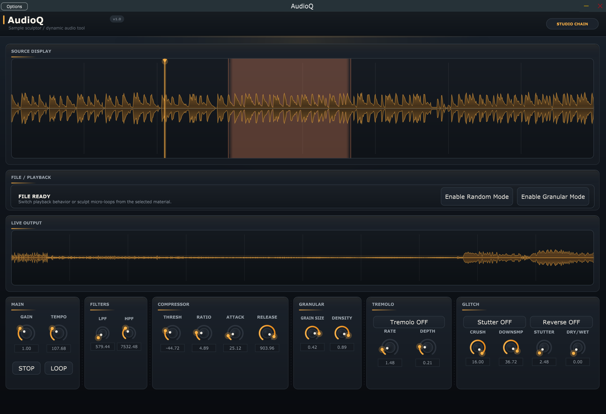

AudioQ
A sampler plugin I built because I kept chaining three plugins together to do one thing.

Demo - loading samples, granular mode, filters, glitch effects, DAW automation
AudioQ
I kept loading a granular plugin, then a filter, then a tremolo, routing audio between all three just to mangle one sample. It was annoying. So I wrote my own plugin that does all of it in one window. C++, JUCE 8, compiles to VST3 and standalone. Drag in any WAV/AIFF/MP3, twist it with granular, filters, compression, bitcrushing, stutter, reverse - and automate every knob from your DAW.
The first version had granular, tremolo, and filters. Then I kept adding stuff because I kept needing stuff. Compressor, bitcrusher, stutter effect, reverse. A proper dry/wet mix. Region-based looping on the waveform. A real-time waveform display next to the static one. 18 automatable parameters total.
What It Does
Granular Synthesis
Chops audio into tiny grains (0.05-0.5s) and randomizes playback. You control grain size and density. A single piano note turns into a pad, a door slam turns into a metallic drone. This was the original reason I built the plugin.
Filters (LPF + HPF)
Low-pass and high-pass, 20Hz-20kHz, using JUCE's StateVariableTPT topology. Zero-delay feedback means no clicks when you sweep the cutoff. You can automate a filter sweep in your DAW and it stays clean through the whole range.
Compressor
Threshold, ratio, attack, release - standard dynamics controls. I added this because granular playback has wild volume spikes and I needed something to tame peaks before they hit the output. Auto make-up gain keeps the level consistent.
Tremolo
Hand-coded sine LFO running per-sample, not a stock JUCE effect. Rate (0.1-10Hz) and depth controls. I squared the LFO shape so the modulation curve feels more musical than a raw sine.
Bitcrusher
Bit depth reduction (1-16 bits) and downsampling (up to 40x). At 16 bits and 1x downsample it does nothing - crank it down and you get lo-fi crunch and aliasing. Good for making clean samples sound broken on purpose.
Stutter + Reverse
Stutter captures a chunk from a 1-second history buffer and repeats it at 2-32Hz. Reverse grabs 180ms chunks and plays them backwards. Both pull from the same history buffer. Together they make glitchy, broken textures from any input.
Tempo + Looping
Resamples playback from 20 to 300 BPM. You can click and drag on the waveform to set loop regions, so a 2-bar drum break stays locked to your project tempo. Optional crossfade on loop points.
Dry/Wet + Volume Safety
Dry/wet knob blends between the original and processed signal. Volume safety monitors peaks and auto-stops playback if it detects anything above +12dB - because granular mode can spike hard and I got tired of blowing my ears out while testing.
Full source on GitHub
All the C++ code, JUCE project files, and build configs. MIT license.